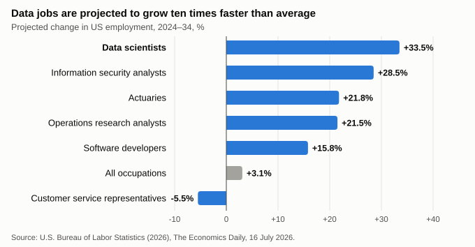

Consider a typical task in a bank or a telecom company. A junior analyst used to spend two days writing SQL queries, cleaning data and building a weekly sales report. Today an AI assistant can produce a draft of the same report in about an hour. The analyst's job is no longer to write the code, but to check whether the numbers are right and to explain what they mean.
Data analytics is one of the fields most exposed to generative AI. An analysis of 200,000 conversations with Microsoft Copilot found that computer and mathematical occupations have some of the highest AI applicability, and that gathering information and writing are the activities AI supports most (Tomlinson et al., 2025). The effect is likely to grow as AI is built into everyday software: Eloundou et al. (2024) estimate that large language models alone could affect over half of the tasks in about 1.8% of jobs, but this share rises to just over 46% when software built on these models is taken into account. At the same time, the World Economic Forum (2025) lists big data specialists as the fastest-growing job to 2030, while data entry clerks are among the fastest-declining.
These changes affect several groups: students and recent graduates who want to enter the field, employers who hire analysts, universities that design data programmes, and managers and citizens who rely on analysis to make decisions. Three employment risks stand out.
Routine tasks such as writing standard queries and preparing reports have traditionally been the training ground for junior analysts. If AI takes over these tasks, employers may hire fewer juniors. In the short term this saves money; in the long term it could leave the profession without experienced analysts in five to ten years.
AI can produce analysis that looks convincing but is wrong. If no one checks it, an AI error becomes an error in a business or government decision. It is often unclear who is responsible when this happens.
Employers in Kazakhstan expect 39% of workers' core skills to change by 2030, the same as the global average, and 63% of employers worldwide name skills gaps as the main barrier to transforming their business (World Economic Forum, 2025). University programmes are updated more slowly than the tools change.
Why act now? Kazakhstan already has a policy framework for AI. The Concept for the Development of Artificial Intelligence for 2024–2029 names human capital as one of its priorities (Government of the Republic of Kazakhstan, 2024), and the Law "On Artificial Intelligence" has been in force since January 2026 (Law No. 230-VIII, 2025). However, these documents do not yet specify how specific professions and university programmes should adapt. Data analytics is a good place to start, because the change there is already visible.

Approach. This brief synthesises ten sources published in 2023–2026: peer-reviewed studies, field experiments, reports by the OECD and the World Economic Forum, US labour statistics and Kazakhstan's policy documents. Most of the detailed evidence comes from the United States and other OECD countries, and there is little data on data analysts in Kazakhstan. The findings for Kazakhstan should therefore be read as indicative.
BLS (2026) projects that employment of data scientists will grow by 33.5% (about 82,500 jobs) and that of operations research analysts by 21.5% in 2024–34, and it links this growth partly to AI adoption. However, the content of the work is shifting. In occupations highly exposed to AI, demand for emotional, digital and social skills has grown by about 15%, and demand for cognitive skills has also risen. Meanwhile, workplaces most exposed to AI post slightly fewer vacancies requiring routine management, business and digital skills (a decline of about three percentage points) (OECD, 2024). In practice, this means that AI is taking over the routine part of analysis, while human judgement and communication are becoming more valuable.
In a study of customer support agents, an AI assistant raised productivity by 14% on average and by 34% for novice and low-skilled workers, with minimal effect on experienced staff (Brynjolfsson, Li, & Raymond, 2025). This suggests that AI could help juniors learn faster. Yet the same tools also reduce the need for junior work: the decline in employment among 22–25-year-olds appears mainly where AI automates tasks rather than where it complements them (Brynjolfsson, Chandar, & Chen, 2025). The policy implication is that the outcome depends on how employers choose to use AI.
In a field experiment with 758 consultants, those who used AI on tasks within its capabilities completed 12.2% more tasks, worked 25.1% faster and produced results of 40% higher quality. On a task outside its capabilities, however, they were 19 percentage points less likely to be correct (Dell'Acqua et al., 2023). The boundary between these tasks is not visible to the user. Analysts therefore need both the skills and the time to verify AI output.
| Type | Skills | Why they matter as AI spreads |
|---|---|---|
| Cognitive | Framing the right business question; statistical and causal reasoning; critical evaluation of AI output | AI can write the query, but a person must decide whether the answer makes sense (Dell'Acqua et al., 2023). |
| Technical | SQL and Python at a level needed to check AI code; effective use of AI tools; data quality, governance and privacy | AI and big data is the fastest-growing skill to 2030 (World Economic Forum, 2025); errors and data leaks become more costly. |
| Interpersonal | Explaining results to non-technical managers; working with stakeholders; ethical responsibility | Social and emotional skills are growing fastest in AI-exposed occupations (OECD, 2024). |
| Before AI | Writes SQL queries by hand, cleans data, builds the same weekly reports and dashboards. |
| With an AI tool | AI generates queries and Python code, suggests cleaning steps, drafts charts and text summaries. |
| Change in tasks | Less routine coding and reporting; more checking outputs, framing questions and explaining results. |
| Change in skills | Critical evaluation, statistical reasoning, data governance, communication with decision-makers. |
The evidence shows that AI makes analysts more productive only when they can check its work, and that the main risk is to people entering the profession. We therefore propose two actions.
Costs could be shared: employers pay the apprentices' salaries and benefit from trained staff, while the state could consider partial support through existing programmes. Apprenticeships and university projects would also generate the local data on analysts' work that Kazakhstan currently lacks.
Brynjolfsson, E., Chandar, B., & Chen, R. (2025). Canaries in the coal mine? Six facts about the recent employment effects of artificial intelligence [Working paper]. Stanford Digital Economy Lab. https://digitaleconomy.stanford.edu/publication/canaries-in-the-coal-mine-six-facts-about-the-recent-employment-effects-of-artificial-intelligence/
Brynjolfsson, E., Li, D., & Raymond, L. (2025). Generative AI at work. The Quarterly Journal of Economics, 140(2), 889–942. https://doi.org/10.1093/qje/qjae044
Dell'Acqua, F., McFowland, E., III, Mollick, E., Lifshitz-Assaf, H., Kellogg, K. C., Rajendran, S., Krayer, L., Candelon, F., & Lakhani, K. R. (2023). Navigating the jagged technological frontier: Field experimental evidence of the effects of AI on knowledge worker productivity and quality (Harvard Business School Working Paper No. 24-013). https://doi.org/10.2139/ssrn.4573321
Eloundou, T., Manning, S., Mishkin, P., & Rock, D. (2024). GPTs are GPTs: Labor market impact potential of LLMs. Science, 384(6702), 1306–1308. https://doi.org/10.1126/science.adj0998
Government of the Republic of Kazakhstan. (2024). Concept for the development of artificial intelligence for 2024–2029 (Resolution No. 592). https://primeminister.kz/en/news/concept-for-artificial-intelligence-development-for-2024-2029-adopted-by-government-28786
Law of the Republic of Kazakhstan No. 230-VIII "On Artificial Intelligence." (2025, November 17). https://adilet.zan.kz/rus/docs/Z2500000230
OECD. (2024). How is AI changing the way workers perform their jobs and the skills they require? (OECD Policy Brief). OECD Publishing. https://doi.org/10.1787/8dc62c72-en
Tomlinson, K., Jaffe, S., Wang, W., Counts, S., & Suri, S. (2025). Working with AI: Measuring the occupational implications of generative AI (arXiv:2507.07935). arXiv. https://doi.org/10.48550/arXiv.2507.07935
U.S. Bureau of Labor Statistics. (2026, July 16). Artificial intelligence, information technology, and employment, 2024–34. The Economics Daily. https://www.bls.gov/opub/ted/2026/artificial-intelligence-information-technology-and-employment-2024-34.htm
World Economic Forum. (2025). The future of jobs report 2025. https://www.weforum.org/publications/the-future-of-jobs-report-2025/